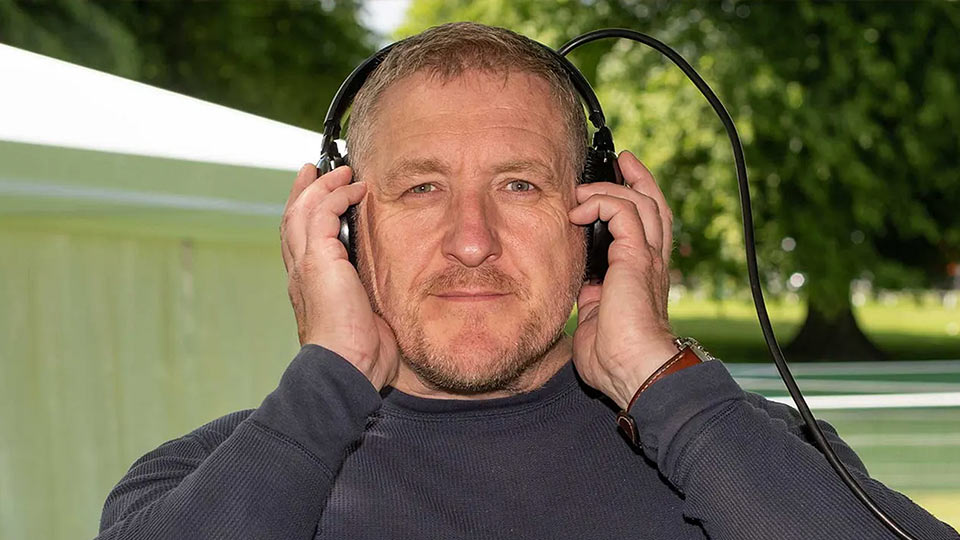
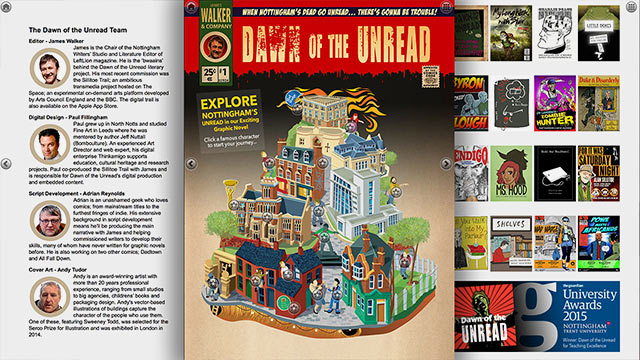
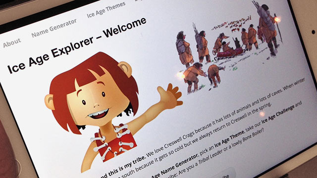
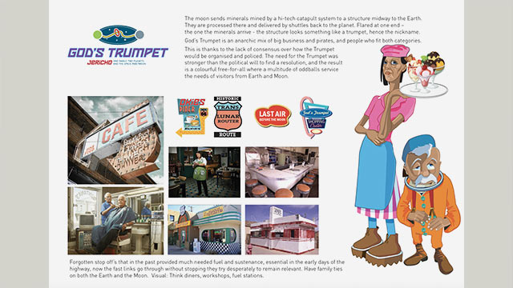

People
Andy Tudor - Illustrator, Graphic Designer, Photographer

Andy and I met in 2014, as the concept for Dawn of the Unread was taking shape. Like me, he's a miner's son from North Nottinghamshire who found his way to art school, and he has worked as a professional illustrator ever since. His work appears in children's books, jigsaws, posters, infographics, the places where playful engagement is king.
What Andy brings is character. His drawings gives places, buildings, vehicles, and everyday objects a personality of their own. His style is recognisable at a glance. An early adopter of desktop publishing, he has a command of typography and layout that goes well beyond the drawing board.



His cover illustration for the Guardian award-winning Dawn of the Unread became the centrepiece for the home page, all of Nottingham's rebel writers at a glance, each character linking to one of sixteen digital comics and related embedded essays and video.
For Creswell Crags, Andy created Una, a cave girl who introduced young visitors to life in the Ice Age via a web-app for tablet devices.
In 2014, Andy helped made moodboards for a Sci-Fi themed e-learning platform co-created with Adrian and myself. The concept featured stories of prospectors travelling along a 240,000-mile orbiting superhighway between the Earth and the Moon.
Paul Fillingham